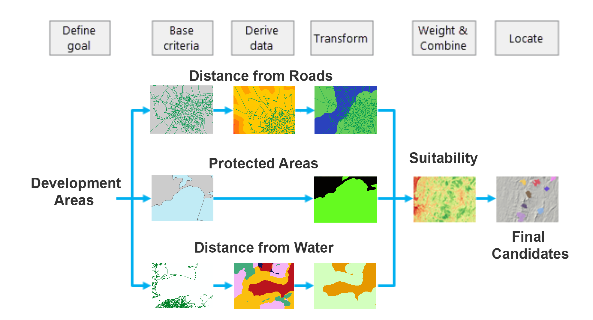

Preamble
In this eighth assignment, you will utilize the Class 8 Technical Lab as a guide to complete your eighth mapping project utilizing input data representing features for the State of Assam, Northeast India”. In this suitability assignment, you will utilize several criteria and areal allotment to ascertain land locations that fit the suitability requirements.
The assignment features several sections as follows:
- Rasterization of input features that have been derived from OpenStreetMap.
- Development of various raster surfaces needed for proximity criteria.
- Analysis of distance threshold criteria upon raster surfaces.
- Final suitability combination layer.
- Subset of ‘Most Suitable’ locations.
- Cartographic design for the preceding raster analysis suitability model.
Assignment 8 - Data
Class 8 Readings:
This week’s reading that will be featured on the upcoming quiz will be from Essentials of Geographic Information Systems textbook.
The Class 8 quiz on Monday 04/01/23 will feature 10 questions covering content in the textbook Chapter 7:
Essentials of Geographic Information Systems textbook - Chapter 7, pages 147 - 162 (Spatial Analysis of Raster Data)
Supplemental reading (not featured on Quiz):
Finding Suitable Locations | Chapter 2 (Suitability Overview)
What is Map Algebra?
Raster Calculator Overview
Raster Calculator Appendix - Map Algebra
Assignment Step 1
Input
envelop,boundary,protected_regions,roads,water_polygonsandwater_polylinesinto the project.mxd.Set geoprocessing parameters for the raster suitability analysis.
Assignment Step 2 - Data preprocessing for the water features
In this step, water features will be prepared in vector format, dissolved then rasterized in preparation for a Euclidean Distance output which is a Global processing function.
Assignment Step 3 - Rasterization + Euclidean Distance Surface for Water Features
With the water vector feature prepared, move to the rasterization and distance surface process. Here the vector feature for water will be first rasterized with a new cell size of 15 meters. Once complete, a distance surface from the rasterized water will be conducted.
Assignment Step 4 - Data preprocessing for the roads feature
With the distance surface complete for the water features, move along to a very similar process for the road feature.
Assignment Step 5 - Rasterization + Euclidean Distance Surface for Roads Features
Next, RASTERIZE the dissolved roads feature, followed by creating the Euclidean Distance Surface for roads.
Assignment Step 6 - Rasterization of Protected Regions
With both water and road features processed to distance surfaces, the next step is to rasterize the protected regions. This feature will be represented by a boolean logic where the true value is inside the protected region as 1 and a false condition of NoData. In this way, no suitability will be allowed to partake of the protected region 1 value.
Assignment Step 7 - Reclassification of Water Proximity Distances
With Rasterization and Euclidean Distance processing complete, continuous cell values for the various distances will be assigned. Here the goal is to produce meaningful, discrete ordinal scaling for suitability across the three input themes - water distances, roads distances and protected regions as a boolean condition true/false.
This process will involve a RECLASS whereby continuous cell values are returned as discrete integer categorical values when they met certain conditions. This process can be done several ways, including RECLASSIFY and a tailored equation constructed within RASTER CALCULATOR
Assignment Step 8 - Reclassification of Roads Proximity Distances
In this reclassification, the ordering of the ordinal values will be reversed. Here ‘closeness’ is an opportunity, whereas in water ‘closeness’ is a constraint.
Assignment Step 9 - Suitability Combination
With all discrete raster outputs complete for water distance, roads distance and protected regions, the next step is to create a combination layer. Again the RASTER CALCULATOR can be used for this process.
Assignment Step 10 - Preparation for Cartographic Design - Hillshade Surface
With the bulk of the suitability now complete, we will utilize a raster surface function known as hillshade to augment the design process.
Assignment Step 11 - Preparation for Cartographic Design - Final Suitability Selection
At this juncture, the Highly Suitable class is obviously dispersed through the project area. To subset to a final suitability, a total square area criteria is often applied to the suitability model. Here a site requirement is typically a threshold between the lowest and highest optimal areal size for a particular land use, project or development. Here we will assume a project site needs at least 800 acres, but not more than 1000 acres. We will make these selections in the vector model and show the results in the cartographic output as vector features atop the final suitability result.
Map layout & Deliverable:
To development the final map design, utilize the map example PDF below to help guide your process. Here the baselayer for the main map frame is the hillshade layer; the raster suitability has 45% transparency applied to the layer; and the points features are symbolized for optimal legibility of both the highly suitable site locations, but also the underling raster suitability which has been thematically mapped.
Final map layout will include the following elements on either a 11x17” or 8.5x11” Portrait 300 DPI:
- Main map frame featuring your cartographic output with thematic design
- Orientation inset map situating the Indian State of Assam relative to Country of India.
- A map title
- Legend representing each suitability category
- Legend vector feature representing the final high suitability criteria
- Data source & Author tag

Utilize the following map example to guide your design process: